第 3 章
はじめての部品
この章では、穴付きの板を一から作ります。スケッチ → 押し出し → 穴 → パターン → フィレットと面取り → 材料 → 保存 → STEP の書き出し、という部品づくりの一通りの流れを、写真を見ながら順に操作します。所要時間は 20〜30 分です。
3.1 作るもの
100 × 60 × 10 mm の板に、φ10 の貫通穴を 4 つ開け、外周の縦の角を R5 で丸め、上面の外周を C1 で面取りします。材料は鋼です。samples/plate_with_holes.mcad と同じ形になります。

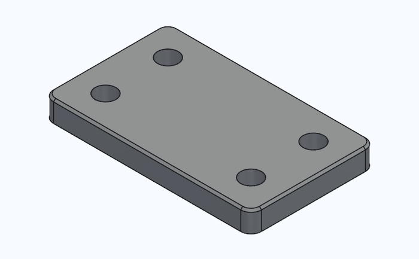
| 節 | コマンド | キー |
|---|---|---|
| スケッチ・押し出し | スケッチ、長方形、寸法、スケッチを終了、押し出し | S・E |
| 穴・パターン | 点のスケッチ、穴、矩形状パターン | H |
| フィレット・面取り | フィレット、面取り | F・C |
| 材料〜エクスポート | 材料、物理プロパティ、保存、エクスポート | Ctrl+S |
3.2 新しいドキュメントを作る
アプリを起動すると、空のドキュメント（［無題 1］）が開いています。別のドキュメントが開いているときは、クイック アクセス ツールバーの［新規］（Ctrl+N）で新しく作ります。単位は mm です（変えるときはリボンの［ツール］タブ → ［オプション］パネル → ［単位と精度］）。
ブラウザの［原点］の左の三角をクリックして開き、［XY 平面（上面）］・［XZ 平面（正面）］・［YZ 平面（右側面）］の 3 つの平面があることを確かめます。
3.3 板のスケッチを描く
平面を選んでスケッチを始める
ブラウザの［XY 平面（上面）］をクリックして選びます。ビューに半透明の平面が出ます。
リボンの［3D モデル］タブ → ［スケッチ］パネル → ［スケッチ］をクリックします（S でも始められます）。先にスケッチを始めてから平面を選んでもかまいません。
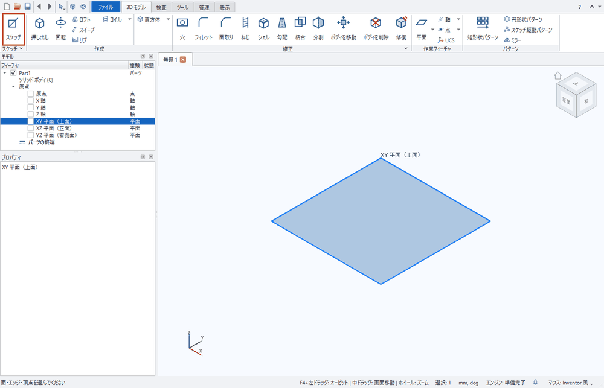
図 3-2 平面を選んでから、［スケッチ］を押します（枠のボタン）。 スケッチのモードに入ります。ビューが平面に正対し、グリッドが出て、リボンに緑色の［スケッチ］タブが出ます。右に［スケッチの診断］と［拘束マネージャ］のドックも出ます。
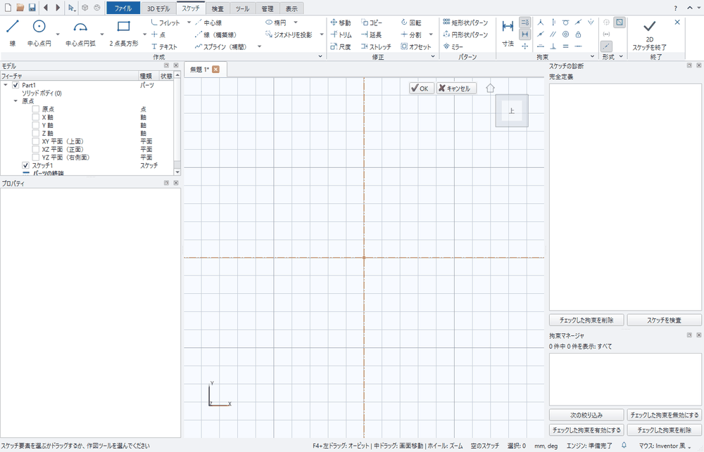
図 3-3 スケッチのモード。ビューの右上の［OK］がスケッチの終了です。


長方形を描く
リボンの［スケッチ］タブ →［作成］パネル →［長方形］▼ の［2 点長方形］をクリックします。
ビューで、原点（座標軸が交わる点）の近くをクリックします。原点に吸い付いて、一致の拘束が付きます。
右上の離れた所（板の対角）をクリックします。長方形ができます。Esc でツールを終えます。
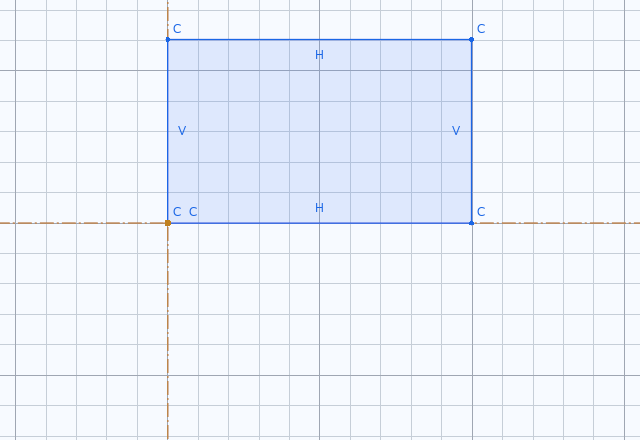
図 3-4 長方形。線の横の H・V・Cは、水平・垂直・一致の拘束の印です。

長方形の線は青色の細い線です。青は、寸法がまだ決まっていない（動かせる）線を表します。
寸法で大きさを決める
リボンの［スケッチ］タブ → ［拘束］パネル → ［寸法］をクリックします（D）。
下の線をクリックし、寸法を置く位置（線の下）をクリックします。ビューに値の欄（HUD）が出るので、
100と入力します。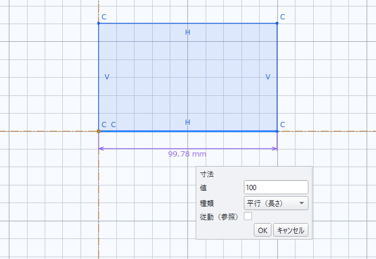
図 3-5 寸法の欄。［種類］は自動で決まります。 Enter で確定します。続けて右の線をクリックし、線の右に置いて
60と入力し、Enter を押します。Esc でツールを終えます。

2 つの寸法が付くと、線が黒い太線になります。黒は「完全定義」（形が全部決まった）という意味です。ステータスバーにも［完全定義］と出ます。

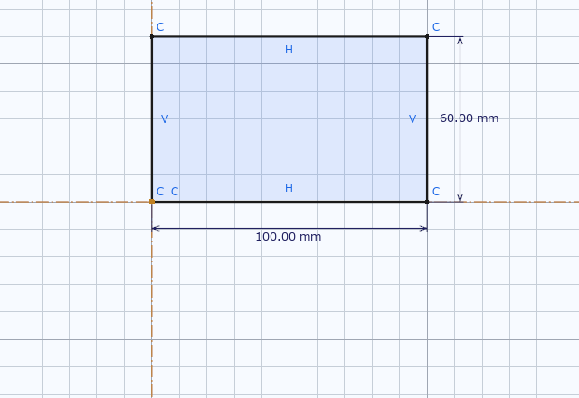
100.00 mm と 60.00 mm が付きました。スケッチを終了する
リボンの［スケッチ］タブ →［終了］パネル →［2D スケッチを終了］をクリックします（ビュー右上の［OK］でも終了します）。パーツのモードに戻り、ブラウザに［スケッチ1］ができます。
3.4 押し出して板にする
リボンの［3D モデル］タブ → ［作成］パネル → ［押し出し］をクリックします（E）。スケッチの閉領域が 1 つだけなので、［プロファイル］には自動で入ります。
プロパティ パネルの［距離 A］に
10と入力します。ビューに、結果のプレビューが半透明で出ます。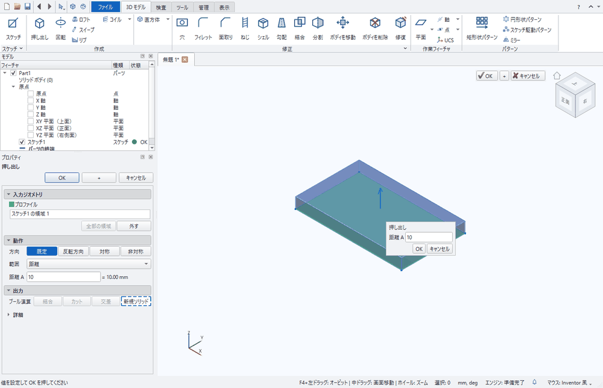
図 3-7 押し出しのフォーム。［入力ジオメトリ］・［動作］・［出力］の順に並びます。最初の押し出しなので、出力は［新規ソリッド］です。 ［OK］（Enter）で確定します。
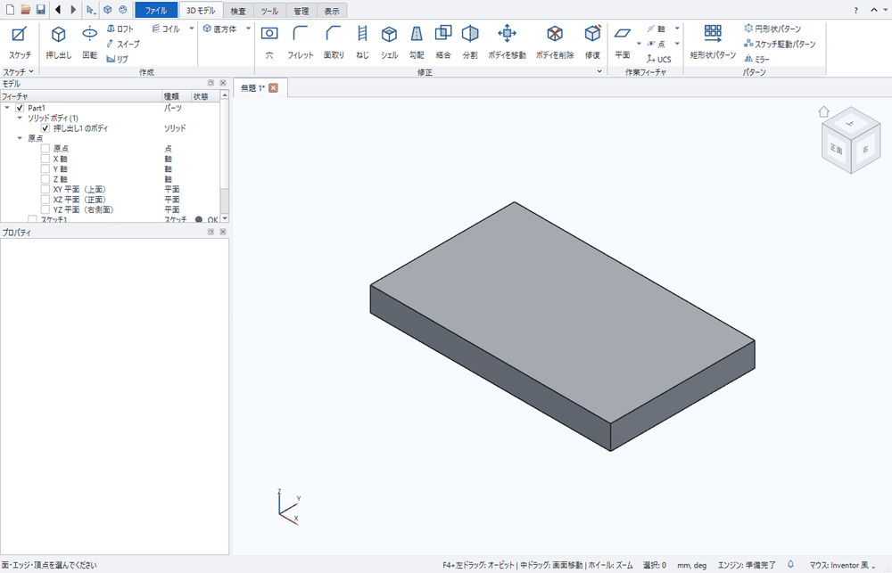
図 3-8 板ができました。ブラウザに［押し出し1］が増えました。


ブラウザの［ソリッド ボディ］に、新しいボディができます。［状態］が［OK］になっていることを確かめます。
3.5 穴を開ける
穴は「位置を決めるスケッチ」と「穴のフィーチャ」の 2 段階で作ります。ここでは穴を 1 つ開け、パターンで 4 つに増やします。
穴の位置のスケッチ
リボンの［3D モデル］タブ → ［スケッチ］パネル → ［スケッチ］をクリックし、板の上面をクリックします。上面にスケッチが始まります（上面の外周は自動で投影されます）。
リボンの［スケッチ］タブ →［作成］パネル →［点］で、板の左下の近くをクリックして点を置き、Esc で終えます。
［寸法］で、原点と点を順にクリックし、置く位置をクリックします。HUD の［種類］を［水平距離］にして
15と入力し、Enter を押します。同じように、［垂直距離］で15を入れます。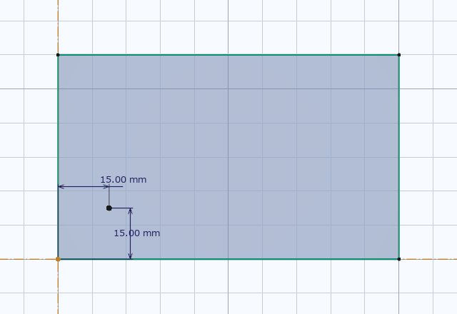
図 3-9 穴の位置のスケッチ。点が原点から横 15・縦 15 の位置に決まりました。 ［2D スケッチを終了］をクリックします。ブラウザに［スケッチ2］ができます。

穴のフィーチャ
リボンの［3D モデル］タブ → ［修正］パネル → ［穴］をクリックします（H）。
ビューで、さっきの点をクリックします。［位置］の欄に入ります（ブラウザでスケッチを選んでも、そのスケッチの全部の点が入ります）。
［直径］に
10と入力し、［終了条件］を［貫通］にします。［穴の種類］は［単純穴］のままにします。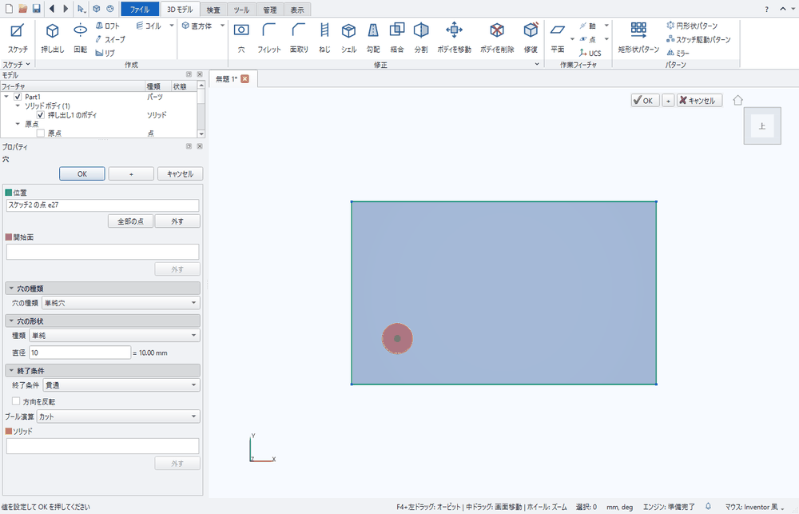
図 3-10 穴のフォーム。プレビューは、穴を開ける位置を上から見たところです。 ［OK］で確定します。ブラウザに［穴1］が増えます。

3.6 穴を 4 つに増やす
リボンの［3D モデル］タブ →［パターン］パネル →［矩形状パターン］をクリックします。
ブラウザの［穴1］をクリックします。［フィーチャ］の欄に入ります。
［方向 1］の欄をクリックし、ブラウザの［原点］の［X 軸］をクリックします。［個数］に
2、［長さ］に70と入力します（［長さの種類］は［間隔］のままです）。［方向 2］の欄をクリックし、［Y 軸］を選びます。［個数］に
2、［長さ］に30と入力します。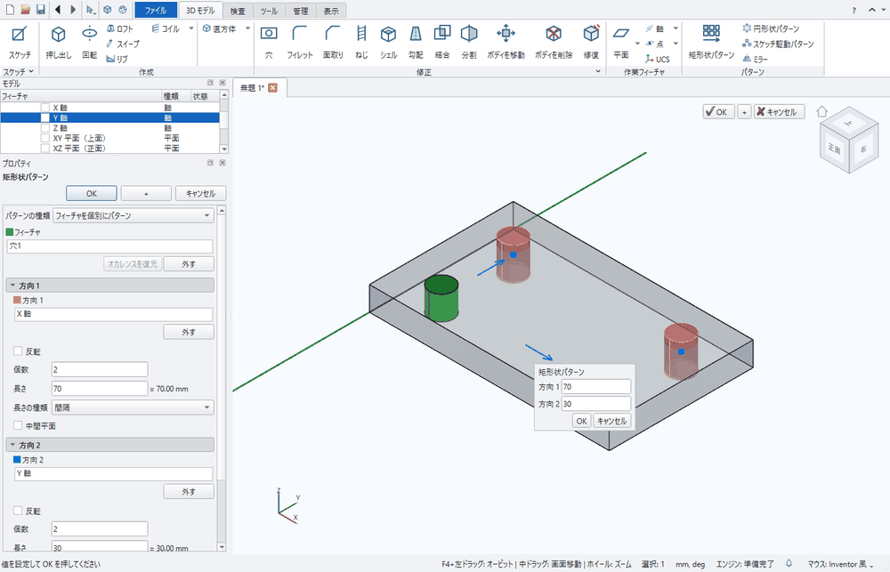
図 3-11 矩形状パターンのフォーム。ビューに、4 つ分のプレビューが出ます。 ［OK］で確定します。
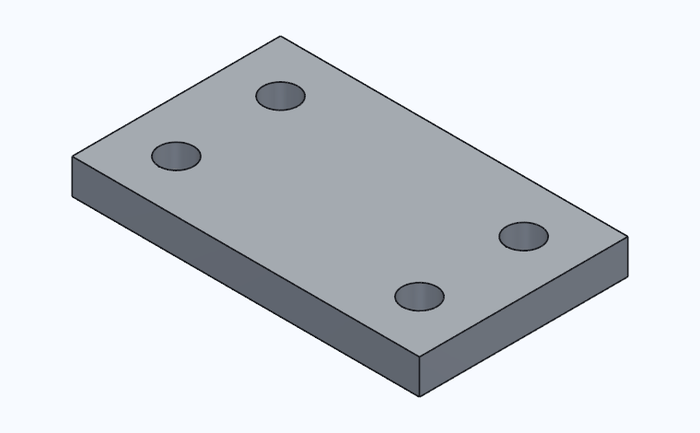
図 3-12 穴が 4 つになりました。


穴は (15, 15)・(85, 15)・(15, 45)・(85, 45) の位置にできます。
3.7 縦の角を丸める
リボンの［3D モデル］タブ → ［修正］パネル → ［フィレット］をクリックします（F）。
板の縦のエッジ（角の稜線）を、1 本ずつクリックします。奥のエッジは見えないので、ViewCube などでビューを回しながら、4 本とも選びます。選んだエッジは色が付きます。
［半径］に
5と入力します。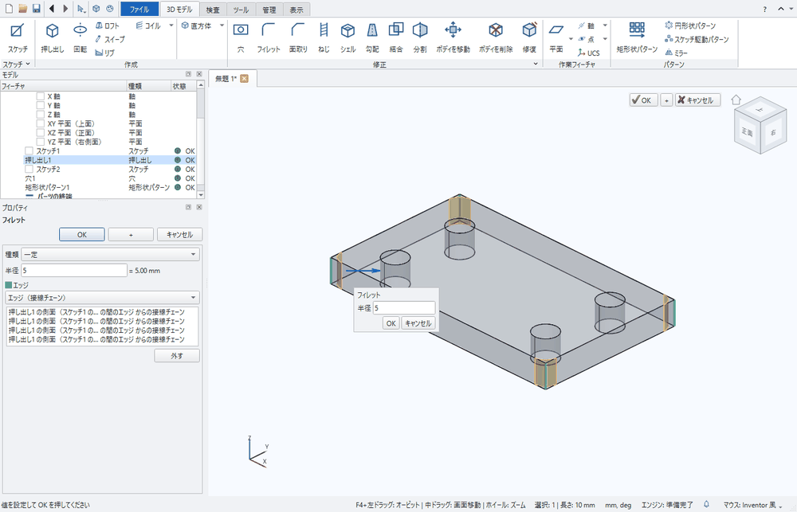
図 3-13 フィレットのフォーム。選んだ 4 本のエッジと、半径 5 のプレビューです。 ［OK］で確定します。ブラウザに［フィレット1］が増えます。

3.8 上面の外周を面取りする
リボンの［3D モデル］タブ → ［修正］パネル → ［面取り］をクリックします（C）。
上面の手前のエッジを 1 本クリックします。接線でつながるエッジ（外周のすべて）が、自動でまとめて選ばれます。
［距離］に
1と入力し、［OK］で確定します。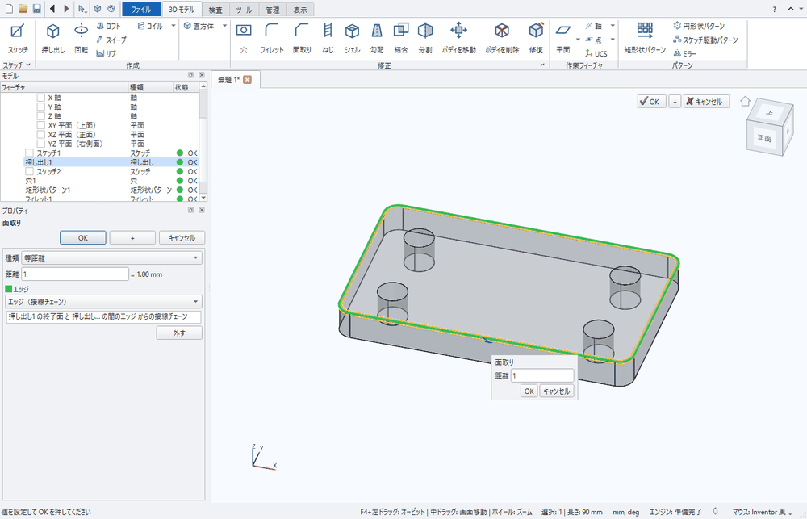
図 3-14 面取りのフォーム。1 本をクリックすると、上面の外周が全部選ばれます。

3.9 材料を割り当てる
リボンの［ツール］タブ →［材料と外観］パネル →［材料］をクリックします。
一覧から［鋼］を選び、［選択範囲に割り当て］を押します。何も選んでいないので、パーツに割り当てられます（ボディを選んでいれば、そのボディだけです）。ダイアログは開いたまま、ブラウザやビューを操作できます。ボディを選ぶと、割り当て先がそのボディに替わります。
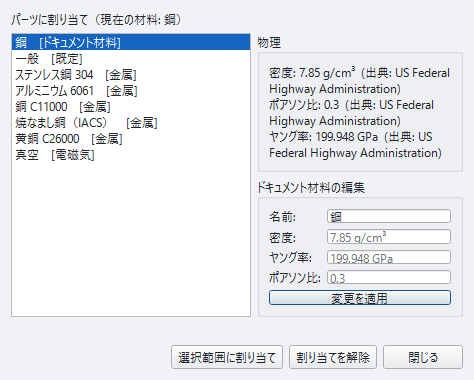
図 3-15 材料のダイアログ。左の一覧で選ぶと、右に密度などの物性が出ます。 ［閉じる］でダイアログを閉じます。

3.10 質量を確かめる
リボンの［検査］タブ →［計測］パネル →［物理プロパティ］をクリックします。
質量・面積・体積・重心・慣性が出ます。値が古いときは［更新］を押します。
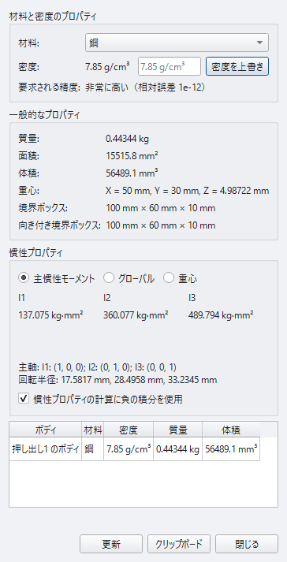
図 3-16 物理プロパティ。鋼（密度 7.85 g/cm³）の板で、質量は約 0.443 kg、体積は約 56 489 mm³ です。

重心は X = 50 mm・Y = 30 mm です（板の中央）。Z は、面取りの分だけ板の厚さの半分（5 mm）より少し下になります。
3.11 保存する
クイック アクセス ツールバーの［保存］（Ctrl+S）を押します。初めての保存なので、保存先とファイル名（拡張子は
.mcad）を決めるダイアログが出ます。my_plateと入力して保存します。保存すると、ドキュメントのタブの名前が ［my_plate］ になり、未保存の印（
*）が消えます。右下に保存の知らせが出ます。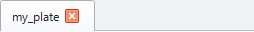
図 3-17 保存したあとのタブ。名前が変わり、 *が消えました。

保存したドキュメントは、リボンの［ファイル］の［最近使ったドキュメント］に入ります。次に開くときは、そこから選べます（第 1 章）。編集中の内容は、一定の間隔で自動回復用にも書かれます（第 13 章）。
3.12 STEP に書き出す
他の CAD や解析のソフトに渡すときは、STEP に書き出します。
リボンの［管理］タブ →［挿入］パネル →［エクスポート］をクリックします。
［形式］が［STEP］のまま、［ファイル］の欄に保存先を入れるか、［参照］で選びます。
［アプリケーション プロトコル］（［AP 214 - 自動車設計］が既定）と［単位］（［ミリメートル］）を確かめ、［エクスポート］を押します。
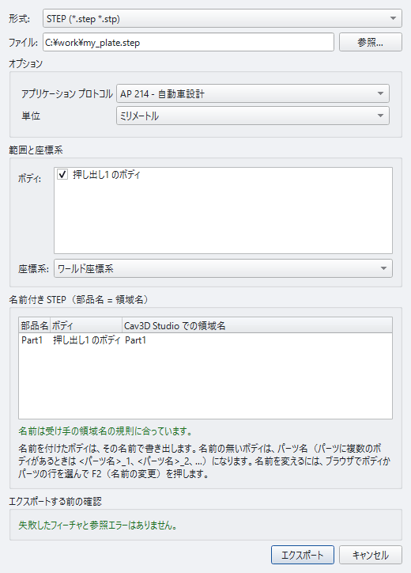
図 3-18 エクスポートのダイアログ。下の［名前付き STEP（部品名 = 領域名）］の表に、書き出す部品の名前が出ます。

書き出しは別のプロセスで行うので、大きな部品でもウィンドウは止まりません。終わると、右下に知らせが出ます。名前付き STEP の使い方は第 26 章にあります。
3.13 次に読む章
スケッチの描き方・拘束・寸法をもっと知りたいとき: 第 4 章 スケッチ
押し出し・穴・フィレットの設定を知りたいとき: 第 6 章 フィーチャ
寸法を変えると形が付いてくる様子を見たいとき: 第 10 章 パラメータと式